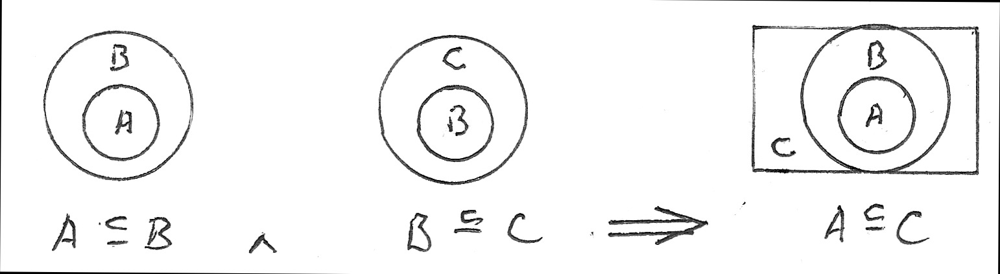

A = { C }, and B = { C, { C } }
A ∈ B and A ⊆ B
Assume: 1) A ⊆ C and 2) B ⊆ D, for conditional proof
Show: A x B ⊆ C x D
3) x ∈ A → x ∈ C, from 1) by definition of subset
4) x ∈ B → x ∈ D, from 2) by definition of subset
Assume: 5) (a,b) ∈ A x B, for conditional subproof
Show: (a,b) ∈ C x D
6) a ∈ A and b ∈ B, from 5), by definition of cartesian product
7) a ∈ C and b ∈ D, from 3), 4), and 6), by 2 applications of modus ponens
8) (a,b) ∈ C x D, from 7), by definition of cartesian product
9) (a,b) ∈ A x B → (a,b) ∈ C x D, by conditional subproof
10) A x B ⊆ C x D, by definition of cartesian product
End of conditional proof; qed
A2 = A x A = { (0,0), (0,a), (a,0), (a,a) }
A3 = A x A x A = { (0,0,0), (0,0,a), (0,a,0), (0,a,a), (a,0,0), (a,0,a), (a,a,0), (a,a,a) }
S ∈ S → S ∉ S, and
S ∉ S → S ∈ S
A contradiction of the form p ↔ ¬p
Therefore, not every condition defines a set!